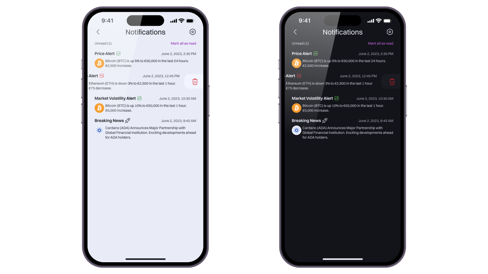
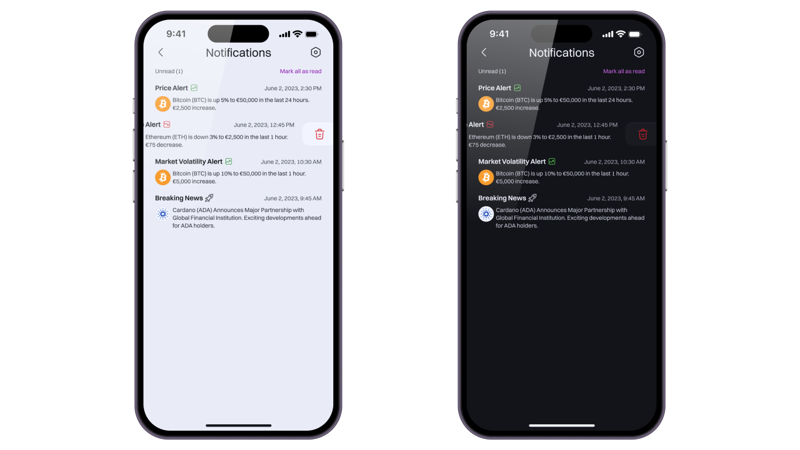

Overview
In this case study, I aim to develop a Crypto Wallet app that caters
specifically to the needs of cryptocurrency enthusiasts, with a
primary focus on crypto assets, decentralized finance (DeFi), and
non-fungible tokens (NFTs). The project will revolve around
designing and developing a comprehensive mobile application that
offers a seamless and secure experience for managing and utilizing
digital assets in the crypto ecosystem.
My Role: As sole designer I was responsible of user
experience & interface design.
Project Duration: 4 weeks
Process
- Research
- Ideation
- Design
Tools
- Figma
- Photoshop
- Illustrator
Challenge: One of the key challenges in developing a Crypto Wallet app focused on crypto assets, DeFi, and NFTs is ensuring a seamless and secure experience for managing and utilizing digital assets within the volatile and rapidly evolving crypto ecosystem. The app needs to address the complexity of interacting with multiple blockchains, maintaining strong security measures, and providing real-time access to the latest market data and decentralized protocols.
Solution: To overcome these challenges, the Crypto Wallet app will be built with robust security features and intuitive user interfaces. It will leverage APIs and integrations with various blockchain networks to enable seamless interaction with different crypto assets. The app will incorporate multi-factor authentication, encrypted storage, and secure key management systems to protect users' digital assets.


 



Research
To gain familiarity with crypto technologies and designing a comprehensive crypto app, I conducted secondary research using platforms such as Coinbase, Rainbow, OpenSea, and Revolut. This involved analyzing the features and interfaces of these applications, studying their functionalities, and reviewing user feedback. By exploring screenshots and conducting a thorough examination, I gained valuable insights into the design elements and terminology specific to the crypto industry.


Ideation
Based on a comprehensive understanding of user needs and objectives throughout the information architecture, I embarked on the ideation phase. Creating user stories provided a clear vision and direction for the design, ensuring that every aspect of the web app focused on meeting user goals and requirements. By aligning my design concepts with user stories, I aimed to create a powerful and intuitive web app that fulfills users' objectives and empowers them to achieve their desired outcomes across the entire application.
Information Architecture
- Total Funds: Displays the overall value of the user's crypto, NFT, and DeFi assets.
- Send: Allows users to send cryptocurrencies or NFTs to other wallet addresses.
- Receive: Provides a unique wallet address for users to receive cryptocurrencies or NFTs from others.
- Swap: Enables users to exchange one cryptocurrency for another within the app.
- Buy & Sell: Allows users to purchase or sell cryptocurrencies with fiat currency or other cryptocurrencies.
- Current Crypto, NFT, and DeFi Assets Showcase: Showcases the user's current holdings, including a summary of each asset's value and percentage change.
- Push Notifications: Allows users to enable or disable push notifications for various types of alerts, such as price alerts, transaction confirmations, or important updates.
- Transaction Notifications: Provides options to customize notifications for specific transaction activities, such as incoming funds, successful transfers, or pending transactions.
- News and Updates: Enables users to choose whether they want to receive notifications for news and updates related to the crypto market, NFTs, DeFi, and other relevant topics.
- Price Alerts: Allows users to set price thresholds for specific cryptocurrencies or assets and receive notifications when the price reaches or exceeds the specified levels.
- Allows users to search for specific cryptocurrencies, NFTs, or DeFi projects within the app.
- Current Transactions: Displays a list of recent transactions, including details such as date, time, asset type, and transaction status.
- Trending NFT Collections: Showcases popular and trending NFT collections, allowing users to explore and discover new artworks.
- Metaverse: Provides information and updates about the metaverse, including virtual worlds, digital events, and related news.
Design
When I started designing, one thing was clear in my mind: the design should be minimalistic and clean. I always kept the 60-30-10 rule in mind, ensuring a well-balanced composition. To make effective use of white space, I adopted a 4-point grid system. Accessibility was always a top priority, so I focused on legibility and reducing eye strain, especially with the implementation of a dark mode. In the light mode, I used shadows to provide elevation, while in the dark mode, I achieved a similar effect with lighter tones.
Typography
Typeface
Switzer Variable

Headings

Text

Weight

Iconography
Iconsax Line Oval Icons Collection

Color
Primary

Neutrals

Secondary

Warning

Success

Danger

Buttons
Medium

Small

Switches

Takeaway
The crypto app I have designed aims to provide cryptocurrency
enthusiasts with a seamless and secure platform for managing their
digital assets, exploring the world of DeFi and NFTs, and staying
informed about the latest trends in the crypto market. With a
user-friendly interface and robust features, the app offers a
comprehensive suite of functionalities.
I can easily track my total funds, send and receive cryptocurrencies
or NFTs, swap between different digital assets, and engage in buying
and selling activities. The app also showcases my current crypto,
NFT, and DeFi assets, allowing me to stay updated on my portfolio's
performance.
The transaction page provides a clear overview of my recent
transactions, while the explore page offers insights into trending
NFT collections and the metaverse, enabling me to discover new
opportunities and experiences.
With a robust search function, I can easily find specific
cryptocurrencies, NFTs, or DeFi projects within the app. The
settings section allows me to personalize my account preferences,
manage security measures like two-factor authentication, customize
language and currency preferences, and tailor the app's appearance
to my liking.
Moreover, the app empowers me with control over notifications,
ensuring I receive important alerts related to price movements,
transactions, news updates, and security events.
Overall, this crypto app is designed to enhance my user experience,
simplify asset management, and provide a gateway to the dynamic
world of cryptocurrencies, DeFi, and NFTs. It offers a secure and
intuitive platform that empowers me to navigate the crypto ecosystem
with confidence and make informed decisions while staying connected
to the latest developments in the industry.